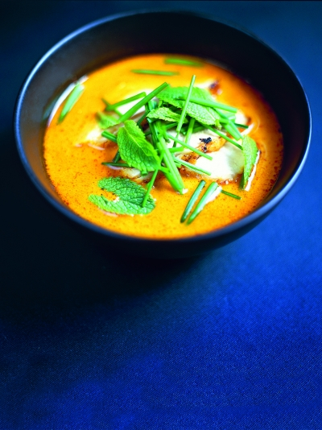

Pumpking & ginger soup
"Are you ready for the Halloween time of the year? No? Then this will certainly help you to get in the scary, tho tasty mood of the season!"

INGREDIENTS:
- - 1 kg pumpkin
- - 2 shallots
- - 75 g ginger
- - a few sprigs of fresh herbs , such as chives, mint
- - extra virgin olive oil
- - 1 litre organic vegetable stock
- - 125 ml coconut milk , plus extra to serve
- - half a tablespoon chilli powder
- - 1 lime
PREPERATION:
Deseed and roughly chop the pumpkin, peel and chop the shallots, then peel and finely grate the ginger. Pick and finely chop the herbs. Place the pumpkin, shallots, ginger and some oil in a large saucepan and sauté until soft. Add the stock, coconut milk and chilli powder. Season, then bring to the boil and simmer for 40 minutes. Blitz in a food processor then serve with the fresh herbs, lime juice and a splash of coconut milk.